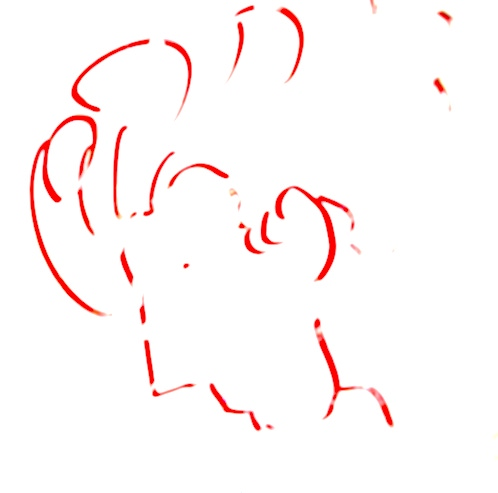

Benjamin Saff
Hello! I'm Ben. I'm a software engineer based in Philadelphia. I like it here—I'm never more than a short bike ride away from wonderful art, music, restaurants, and nature. I enjoy reading, playing guitar, writing, and aikido. I believe love is woven into the fabric of spacetime, and I wish you health and happiness.
In philosophy, a sound conclusion follows logically from well-examined premises. The same principle applies when choosing tools for building web apps. If we default to trendy frameworks without first understanding the problem, we should be skeptical that we've made the right choice. Having said that, I built this site using Astro; no JS on the browser but arguably overkill on the backend tooling!